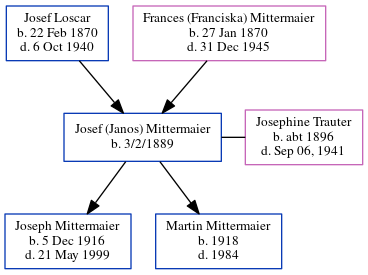

Josef (Janos) Mittermaier 1889 -
[ Home ] | [ Calendar ] | [ Surnames Index ] | [ Census Index ] | [ Family History ]The child of Josef Loscar (a hatmaker) and Frances (Franciska) Mittermaier, Josef Mittermaier, the great-uncle of Michele Copp (née Phillips), was born in Cilli, Austria on 3/2/18891,2 and married Josephine Trauter (with whom he had 2 children: Joseph A. and Martin) in Yugoslavia around 1913. From 1917 to 1918, he was living in Tucker County, West Virginia, USA4. In 1921 he traveled from Le Havre to New York, New York, arriving 14 May with all of his children.
He died in Thomas, Tucker, West Virginia2 and is buried in United States 2,3.
Parents
- Josef was born on Feb 22, 1870
- Frances (Franciska) was born on Jan 27, 1870
Children
- Joseph A. was born on Dec 5, 1916
- Martin was born in 1918
Citations
- New York Passenger Lists, 1820-1957 Online publication - Provo, UT, USA: The Generations Network, Inc., 2006.Original data - Passenger Lists of Vessels Arriving at New York, New York, 1820-1897; (National Archives Microfilm Publication M237, 675 rolls); Records of the U.S. Customs Service, R
- U.S., Find A Grave Index, 1600s-Current Ancestry.com Operations, Inc.
- West Virginia, U.S., Deaths Index, 1853-1973 Ancestry.com Operations, Inc. ( "West Virginia Deaths, 1853–1970." Index. FamilySearch, Salt Lake City, Utah. From originals housed in county courthouses throughout West Virginia. "Death Records.".)
- U.S., World War I Draft Registration Cards, 1917-1918 Ancestry.com Operations Inc (United States, Selective Service System. World War I Selective Service System Draft Registration Cards, 1917-1918. Washington, D.C.: National Archives and Records Administration. M1509, 4,582 rolls. Imaged from Family History Library microfilm.)
Family Tree
Generated by ged2site. Last updated on Jun 6, 2024